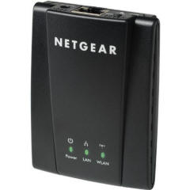
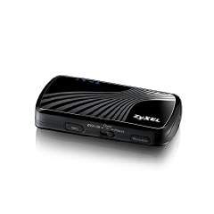

Routers that worked with the Gemini-2.
-
Netgear WINCE2001

Discontinued
but still available on Amazon for now, but used or refurbished.
The Netgear part number is WNCE2001. This adapter has been discontinued.
You can get factory refurbished units from AMAZON for now.
Now you will have to have a wireless router to use the WNCE2001.
It can only act as a bridge (receiver.) There has to be an established WiFi network already for it to communicate with.
It can be powered from the USB-A port of the Gemini.
When used in this method, you will need to configure the WNCE2001 from a laptop prior to using it with the
Gemini II (just follow the directions supplied with the unit) or get the manual here.
If you are powering it from the USB port you will need to increase the DHCP timeout setting on the
Gemini II to about 40 seconds to allow the Netgear to power up and acquired
an IP address from your router. (otherwise the Gemini II will time out).
The maximum delay time the Gemini will accept seems to be 40 seconds. (even though you can enter a longer value.)
This works for some WNCE2001/Gemini-2 units and does not for others.
I could not get mine to get an DHCP assigned address with my WNCE2001 because it
takes 56 seconds to initialize.
So I am stuck using Static IP addresses when using the WNCE2001.
But this is OK, as that way I always know the IP address of the Gemini-2.
I followed the instructions starting on page 6 of the manual.
The instruction tell you that a setup page will automatically appear in your browser,
but I found this not to be the case, I had to type http://mywifiext.net to get the setup page to come up.
-
D-Link DAP-1350 (discontinued and not covered in this write-up)
- ZyXel MWR102 and ZyXEL NBG2105

The ZyXel MWR102 unit, which has all the same features as Router, AP, and Bridge modes.
They do not include instructions on how to put it into the "Client Bridge" mode in the users manual.
But I have a web page to "configure the MWR102 for Client Bridge mode"
The bad news is that ZyXEL has also discontinued it. It has been replaced by a ZyXEL NBG2105.
The MWR102 is still available on Amazon and Tigerdirect, but for how long?
The NBG2105 is available on Amazon and NewEgg, but again for how long?
It will not only act as a bridge as the Netgear will, but also act as a router, and Access Point.
What this means is that unlike the Netgear you do not have to have a wireless router to use it. You can use it as an AD-HOC device.
This means that a laptop or tablet can talk directly to the Gemini.
The Gemini with with device actually becomes the host for the wireless network.
This device can also be powered from the Gemini USB port.
This device is also faster as it is N networking compatible. Amazon has these for about $37
Well after testing with the MWR102, I can say that it is harder to get working in the bridge mode than the WINCE2001,
but it will work in that mode.
I did not test the Access moder or the Router mode.
- TP-Link TL-WR702N
TP-Link TL-WR702N that has a client mode that works very well with the Gemini-2 to provide a WiFi Ethernet connection.
It takes it about 15 seconds for it to connect from power on.
The main problem is that the instruction sheet I received, is not in English, but the mini-CD that comes with it does.
To configure this unit the frirst time, connect an Ethernet cable to you computer to it and power it with USB or the supplied power supple.
This units base IP address is 192.168.0.254, with a user name of admin and password of admin.
That brings up a configuration menu.
To use it with the Gemini-2 select client mode, and then answer all the questions and you are on your way.
Remove the Ethernet cable from your computer, and plug it into the Gemini-2 and now you have an
wireless Wifi adapter for the Gemini-2.
It was really simple to get it working.
This unit is available from Amazon for about $17.00
Use two of them to set up a remote system in the field. One
used as a router providing WiFi DHCP, and the other as above
connected to the Gemini-2. If you cannot find this particular
one TP-Link calls these either Pocket routers or Nano Routers. I
think the TL-TW702N is now being replaced by other models as I write
this. Some
of the part numbers are: TL-WR802N, TL-WE702N, or
TL-WR710N. Now I have not tested any of these three.
- Other Considerations
There is also one other thing to take into account when connecting any
of the above devices or the Gemini-2 itself.
Some routers let you block WiFi connected devices by there MAC
address. If your network router is set up to do this, then you are
going to have to go into the setup routine for your network router
and tell it the MAC address of the of the travel router you are using, and
also the Gemini-2 or
turn MAC blocking off until you have the above device configured and
connected to the Gemini-2 and your network. You can then go back into
your router and allow the MAC address of the above device and the
Gemini-2. I cannot advise you how to do this as there are too many
routers for me to know how each is configured. Only allowing known
MAC addresses on a WiFi network is an additional security measure
besides using password security.
- DD-WRT firmware
It is possible to load the
http://dd-wrt.com firmware into an older router and turn it into a bridge.
Find out if your older router has DD-WRT firmware for it
here.
The client bridged instructions are
here or
Repeater Bridge.
DD-WRT firmware is very versatile and offers many options.
Most routers you would do this to will be AC wired, but there range
will usually be more than a travel-router. Most will also have
4 hardware ports also. Some if newer will also support both
client-bridged plus providing an additional WiFi LAN connection to
extend the WIFi even further. I used a D-Link DIR-615e to test
this with. It worked great.
|